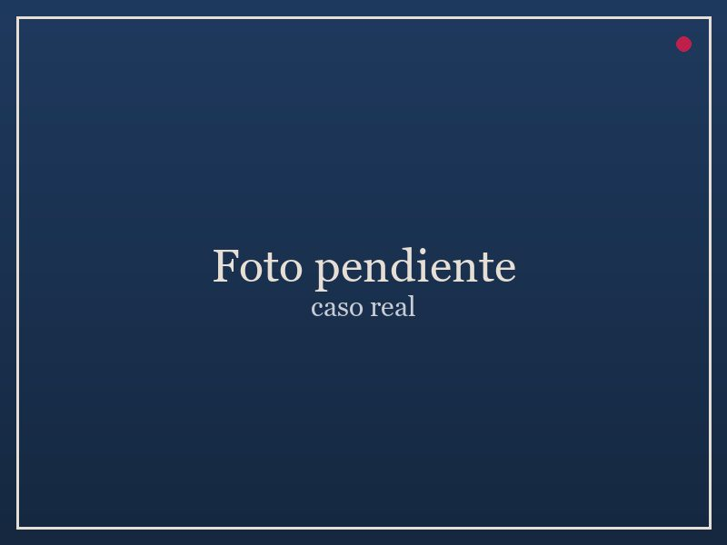

En la práctica
Cuatro situaciones, cuatro salidas

Guardarropa
Armario lleno, nada combinable. Salida: un sistema de prendas clave que combinan entre sí.

Trabajo
De oficina informal a un rol con más exposición: autoridad visual sin perder comodidad.

Marca personal
Cuando tenés que proyectar solidez ante clientes e inversores, y tu imagen todavía no lo dice.

Actualización
Actualizar el estilo sin perder la elegancia que ya te identifica.